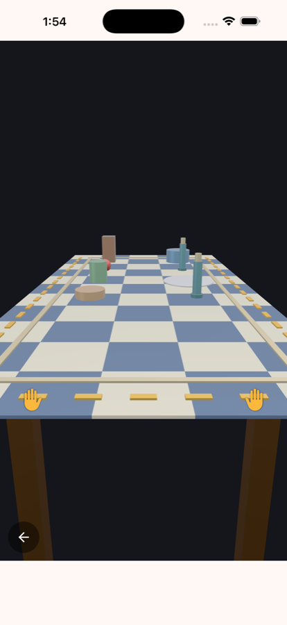

本物と同じように動く
食器はひとつずつ3次元の物理で動きます。摩擦、慣性、重心の高さ、積み重なりのバランス。速く引く以外の攻略はありません。
iPhone向け 一発勝負の物理ゲーム
テーブルクロス引き。あの一発芸を、そのままゲームにしました。やることは指を下へ滑らせるだけ。けれど、ためらえば食器は連れて行かれ、雑に引けば倒れます。

実装済みの機能をもとに紹介
食器はひとつずつ3次元の物理で動きます。摩擦、慣性、重心の高さ、積み重なりのバランス。速く引く以外の攻略はありません。
食器がどれだけ動かなかったかを％で採点します。ぎりぎり残った成功と、ほとんど動かない鮮やかな成功は、別のものとして評価されます。
4つの難易度で、食器の数・種類・並び方が変わります。卓の中身は遊ぶたびに新しく作られ、同じ配置は二度と出ません。
難易度ごとに直近の平均％と成功率が残ります。平均は直近の成功だけを見るので、一度いい数字を出して終わりにはなりません。
評価
上を目指すほど、指の速さがそのまま数字に出ます。自己ベストを更新すると、その場で知らせます。
画面


手ざわりまで
電車の一駅、レジの待ち時間。1プレイは数秒で終わります。けれど「もう一回」が止まらない種類のゲームです。
App Store で配信中
無料でお使いいただけます。画面下部にバナー広告が表示されます。アプリ内課金はありません。日本語と英語に対応しています。